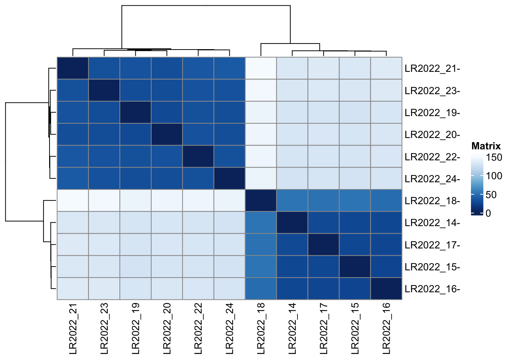

Sample 32 and sample 26 have low read number.
It seems that genes are either expressed in all samples, or not expressed at all. Only keep genes that are expressed in at least 2 samples.
Applying the boxplot function to the raw counts from our dataset reveals something about the nature of the data; the distributions are dominated by a few genes with very large counts.
Log2 scale data with the vsd function from DEseq2 to remove the dependence of the variance on the mean, particurarly the high variance of the logarithm of count data when the mean is low.
The multidimensional scaling (MDS) plot is frequently used to explore differences in samples. When data has been MDS transformed, the first two dimensions explain the greatest variance between samples, and the amount of variance decreases monotonically with increasing dimension.
I applied the dist function to the transpose of the transformed count matrix to get sample-to-sample distances.

The dispersion plot below is typical, with the final estimates shrunk from the gene-wise estimates towards the fitted estimates. Some gene-wise estimates are flagged as outliers and not shrunk towards the fitted value, (this outlier detection is described in the manual page for estimateDispersionsMAP). The amount of shrinkage can be more or less than seen here, depending on the sample size, the number of coefficients, the row mean and the variability of the gene-wise estimates.
par(mfrow=c(2,2),mar=c(2,2,1,1))
ylim <- c(-10.5,10.5)
resGA <- results(dds, lfcThreshold=2.5, altHypothesis="greaterAbs")
resLA <- results(dds, lfcThreshold=2.5, altHypothesis="lessAbs")
resG <- results(dds, lfcThreshold=2.5, altHypothesis="greater")
resL <- results(dds, lfcThreshold=2.5, altHypothesis="less")
drawLines <- function() abline(h=c(-2.5,2.5),col="dodgerblue",lwd=2)
plotMA(resGA, ylim=ylim); drawLines()
plotMA(resLA, ylim=ylim); drawLines()
plotMA(resG, ylim=ylim); drawLines()
plotMA(resL, ylim=ylim); drawLines()Copyright © 2022 Alicia Pliego. FTP lab. All rights reserved.